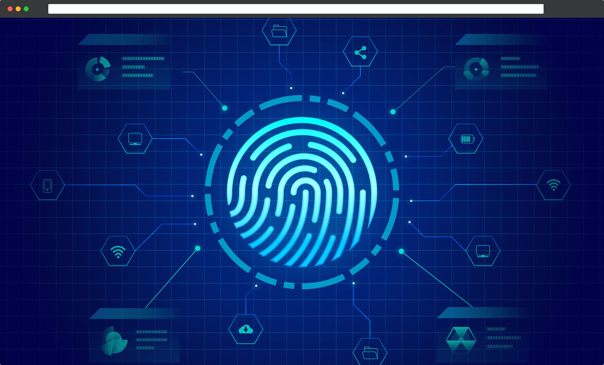

Authentication Server
 View Site
Key Technologies: FastAPI, JSON Web Tokens, OWASP, Token Based Authentication
As I was building the projects above, I realised I was spending a lot of time building very similar user
authentication and authorisation systems for each project. In order to cut out this duplication in future, I
decided to build a separate authentication server for all my projects to use. Centralising authentication
services brought the added advantage of only having to maintain one set of security logic, reducing the chance
of errors or missed updates - especially important when it comes to user authentication.
Whereas my previous projects had mainly used Flask on the backend, for this project I decided to try out FastAPI.
I enjoyed many aspects of using FastAPI, particularly the type checking and integration with Pydantic which
reduced developer errors. I also found the dependency injection system for reducing code duplication and improving
the modularity of my code.
As part of this project I also gained familiarity with OWASP security best practices and the use of JSON Web Tokens
to implement a token based authentication scheme.
Project image by Freepik